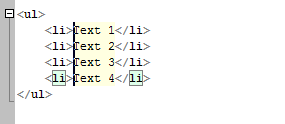
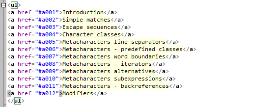

Multi-Carets
Introduction
Multi-carets feature allows to add many carets (text blinking cursors), using one of the methods:
- Click on any position with Ctrl key pressed.
- Click on any position ("beginning"), then click on another line ("ending") with Ctrl+Shift keys pressed:
this will add multiple carets aligned in a column.
- Make a several lines selection (stream or column), then use commands "Edit -- Multi-carets -- Carets from selection...".
- Make a search with placing search marks, then use commands "Edit -- Multi-carets -- Carets from search marks...".

Carets aligned in a column (Ctrl+Shift+click)
The animated image shows multi-carets in action in HTML editing:

Carets in action
Most of important editor commands work synchroniously on all carets positions:
- carets moving: Left/ Right/ Up/ Down/ Home/ End/ Ctrl+Left (move word left)/ Ctrl+Right (move word right).
- text typing and deleting.
- clipboard operations: Copy/ Cut/ Paste, they operate on all lines with carets.
- special actions: delete word left/ delete word right/
delete line/ indent line/ unindent line/ delete to line start/ delete to line end.
Hints
- To cancel multi-carets mode, just click without Ctrl pressed.
- To remove a caret, just click it again with Ctrl pressed.
- Lines with carets are marked on gutter with different color.
- When several carets move to the same position, "duplicate" carets are discarded.
- When only one caret is left, multi-carets mode is deactivated and "usual" caret appears.
- These commands cancel multi-carets mode: Ctrl+A, Shift+Alt+arrows.
- These commands ignore multi-carets mode and just scroll the view: PageUp, PageDown, Ctrl+Home, Ctrl+End.
- Multi-carets feature can be disabled in the Options dialog.
How to use Esc key to cancel multi-carets mode?
Go to Options dialog.
First, you need to set option "Esc key" to "Do nothing".
Then, in the "Keys" tab, assign Esc key to one of the commands:
- Multi-carets -- Remove carets, keep first
- Multi-carets -- Remove carets, keep last